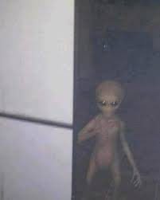

La vida extraterrestre es un tema que ha fascinado a la humanidad durante siglos. Desde avistamientos de ovnis hasta teorías sobre civilizaciones avanzadas, la posibilidad de que no estemos solos en el universo sigue siendo una de las preguntas más intrigantes.
La vida extraterrestre se refiere a la existencia de organismos vivos fuera del planeta Tierra. Esta vida puede variar desde microorganismos simples hasta civilizaciones tecnológicamente avanzadas.
Hay numerosas historias y teorías sobre avistamientos de ovnis y encuentros con extraterrestres. Aunque no todas son creíbles, algunas han sido objeto de investigaciones científicas serias.
Existen varios proyectos científicos dedicados a la búsqueda de vida extraterrestre, incluyendo:
Un documental sobre la búsqueda de vida extraterrestre y las posibilidades de encontrarla.
Un video que examina algunos de los avistamientos de ovnis más famosos y su posible explicación.